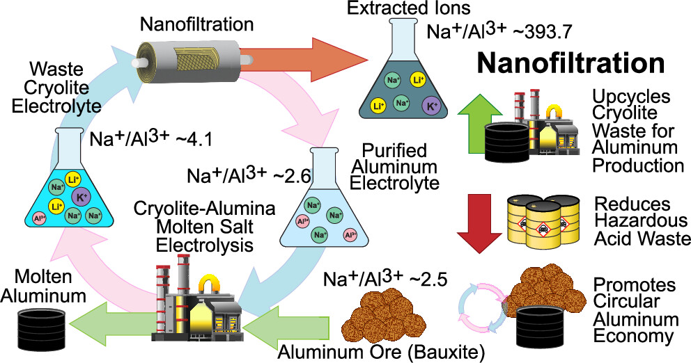
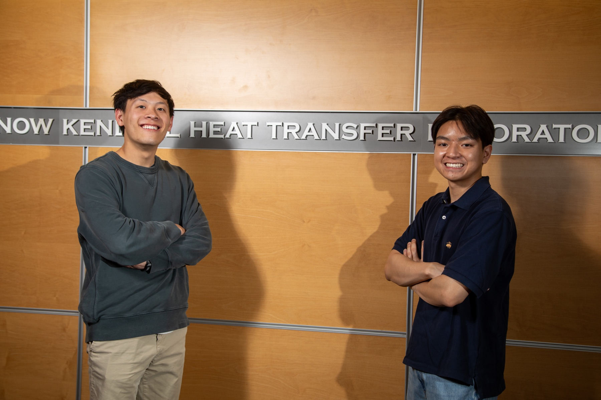
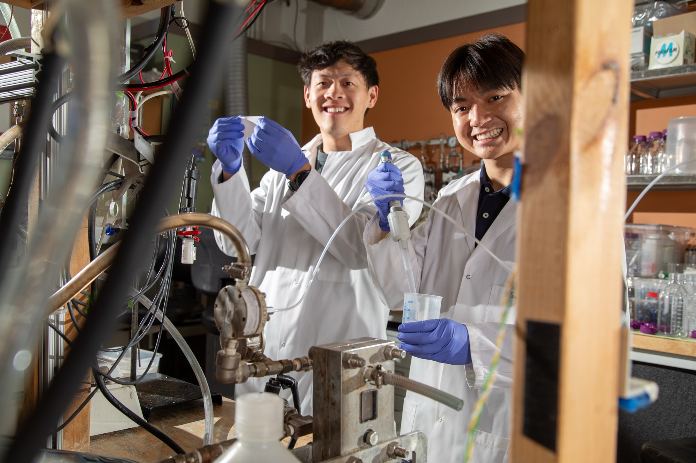

Aluminum Recovery from Waste Cryolite
January 2024 – September 2024 · The Lienhard Research Group



Summary: Co-authored a paper in ACS Sustainable Chemistry & Engineering (2025) presenting the first Donnan-enhanced nanofiltration method for recovering aluminum from spent cryolite electrolyte. A polyelectrolyte-coated membrane retains aluminum (99.1% rejection) while sodium, potassium and lithium pass through, raising Na/Al selectivity by 55% so the electrolyte can be reused instead of discarded. I analyzed the ion rejection data, created the paper's figures and contributed to the manuscript.
Skills
- Analyzing ion rejection data across varying pH and flux conditions
- Scientific writing and figure design for journal publication
- Membrane science: cryolite electrolyte synthesis, membrane aging studies
Technical details
Background. Aluminum refining uses a cryolite-based electrolyte that gradually accumulates sodium, lithium and potassium. Once contaminated it can no longer be used, and disposing of it contributes to fluoride and aluminum contamination of soil and water.
Approach. A polyelectrolyte-coated nanofiltration (NF) membrane exploits Donnan exclusion (charge-based selectivity) to favor sodium permeation and aluminum retention. I analyzed ion rejection experiments for coated vs. uncoated membranes under varying pH and flux, and built the figures and schematics for the paper: the filtration process, membrane cross-sections, performance plots, and summaries of process efficiency, membrane stability and module-scale energy consumption.
Results.
- 99.1% aluminum rejection, while monovalent ions (Na⁺, K⁺, Li⁺) passed freely
- Na/Al separation factor of up to 102.0 at low pH, showing strong charge-based selectivity
- Aluminum in the treated permeate fell to 0.00194%, approaching safe effluent thresholds
- Retentate Na/Al ratio of about 2.6, meeting the requirement for returning electrolyte to Hall–Héroult cells
- Module-scale modeling showed NF treatment is viable at industrial scale with manageable energy use
This supports a closed-loop aluminum production model in which waste electrolyte is recycled into active material.